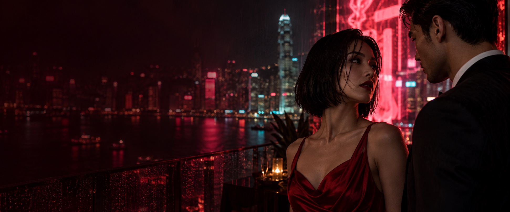
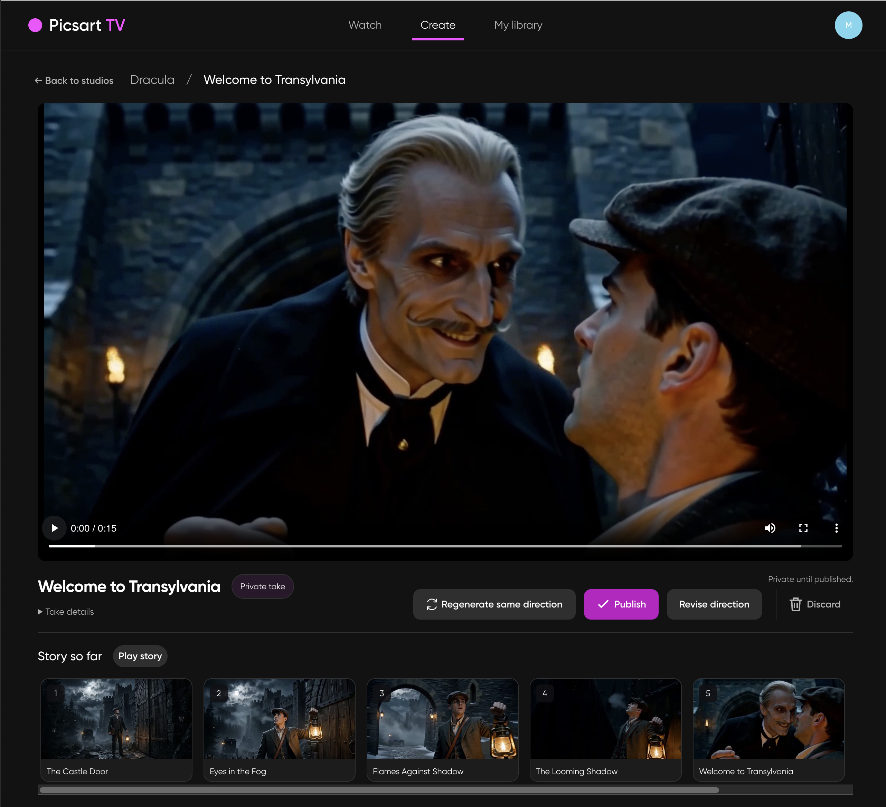
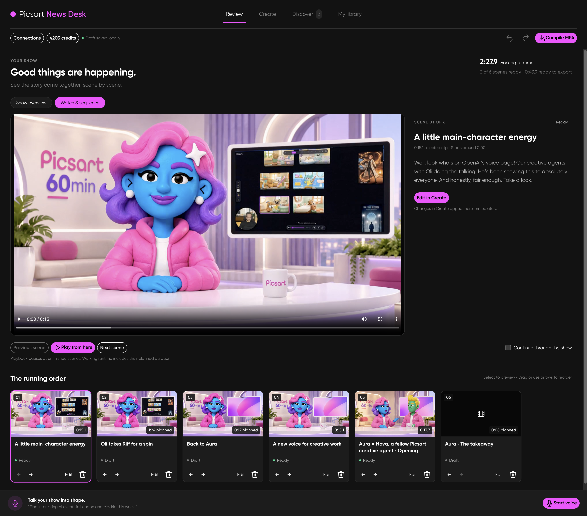

A new kind of TV. A different kind of you.
Plot twist.
You’re in.
Remix a drama. Unfold a world. Give your team the headlines.
Whatever your story, make it yours.
Every story starts somewhere.
Three ways in. So many ways forward.
Find your next obsession.
Then make it your own.
Watch a microdrama. Join the cast.
Give that cliffhanger a different ending.

One story.
A thousand what-ifs.
Find a world. Follow your curiosity.
Take the story somewhere new.

Big things happening.
Give them a show.
Turn team news, ideas and updates into a show worth tuning in for.
Meet News DeskShort stories. Long on possibilities.
Your next obsession.
Microdrama Studio
Dream up the drama.
Meet Spark, your AI showrunner.Build a series that’s entirely yours. Spark helps shape your universe, characters and season arcs—with the hooks, twists and cliffhangers that keep people watching. You make every detail your own.
Explore the After hours studio
Microdrama Studio
Dream up the drama.
Meet Spark, your AI showrunner.Build a series that’s entirely yours. Spark helps shape your universe, characters and season arcs—with the hooks, twists and cliffhangers that keep people watching. You make every detail your own.
Explore the After hours studioInside After hours
From the big picture to the smallest beat.Characters & universe · After hours studio preview
A look inside the studio. These screenshots preview the tools; story creation happens in Microdrama Studio.
Unfold by Picsart
The plot thickens.
Then you take over.
Find a world you love. Pick a moment.
See what happens when you call the shots.
The studio collection · Unfold product walkthrough
A little imagination goes a long way.
Love the story.
Mess with the plot.
That kiss. That betrayal. That terrible decision.
You know exactly what you'd do differently.
He says, “I've been waiting for you.”
Picsart News Desk
Good news.
Great show.
Your team has stories worth telling. Turn the launches, the learnings and the little wins into an internal show people want to watch.
See the show come togetherTalk your show into shape.
Start with an idea. Shape the script, the topics and the takeaways with your voice.
Give your updates a host.
Build presenter scenes, add your own clips and put every moment in the right order.
Ready for your audience.
Review the show scene by scene, then compile the finished clips into a shareable MP4.
The weekly roundup. A product launch. A moment worth celebrating.
You bring the news. Make it a show.
The next twist has your name on it.
The story is yours now.
Find your way inWhat is Picsart TV?+
A place to discover short, dramatic stories and imagine your own version. Explore a production, put yourself in the scene, or take the story in another direction. This page previews that experience with fictional concept productions.
Can I create my own microdrama?+
Microdrama Studio helps you build a series from the first idea to detailed storyboards. Spark, your AI showrunner, helps develop the universe, characters, season arcs and microdrama beats. You can refine motives, dialogue, camera direction and individual shots. Open the After hours studio preview in the Originals section to explore the tools.
How does Unfold work?+
Find a story world, choose a scene and give it your direction. Review your take, explore the branching story map and decide where to go next. The Unfold walkthrough above shows these steps through product screenshots.
What can I make with Picsart News Desk?+
Create internal communications shows from team updates, product news, interviews and prepared clips. Shape the show by voice, edit the running order, review each scene and compile ready clips into an MP4. The screenshot here shows the separate News Desk app; generation and export are not connected to this landing-page preview.
Can I try everything on this page?+
You can browse the collection, explore story details, try the direction preview, and explore the Unfold and News Desk screenshots. These demos don't generate video or change your face. Live microdrama playback and remixing will need the production catalog and app connections before launch.